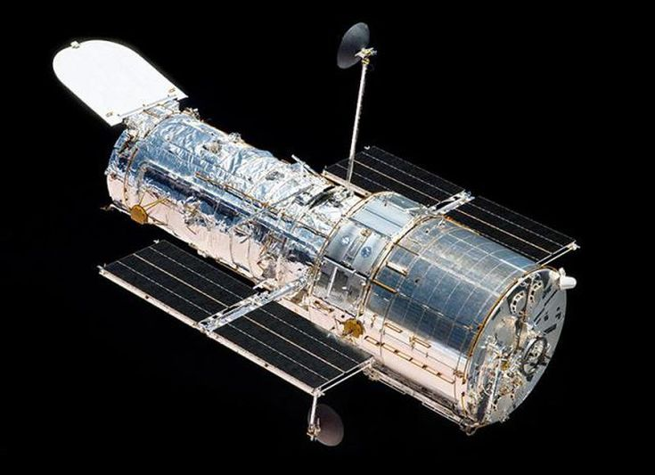
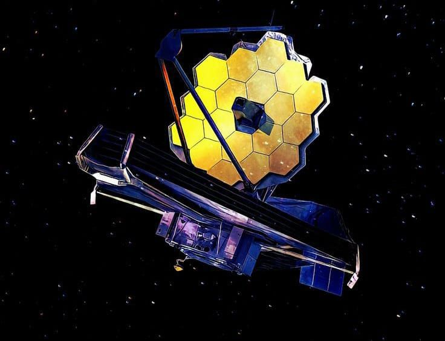
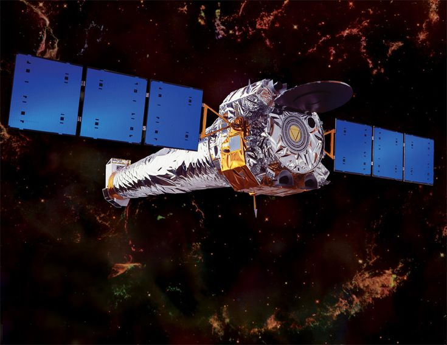
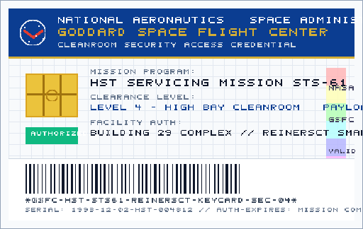
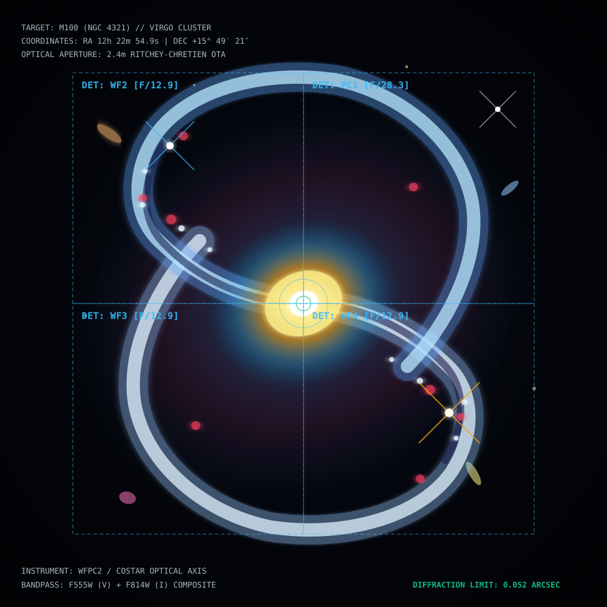

1.png)

 1.png)
| CONTROL KEY | ACTION / FLIGHT DIRECTIVE |
|---|---|
| W A S D | Navigate Facility / Move |
| Mouse / Drag | 360° Inspection & Look |
| Shift | Sprint / High-Speed Walk |
| E | Interact with Terminals & Workbenches |
| V | Toggle 1st Person / 3rd Person Camera |
| M | Toggle Radio Microphone |
Exploring Deep Space Science

Exploring Exoplanets

Exploring high-energy X-rays

You are assigned to the NASA Hubble Facility to service the Hubble Space Telescope subsystems. As a systems engineer, your workflow follows authentic NASA protocol: walk up to either Desk 01 (Mechanical), Desk 02 (Electronic ) or Desk 03 (Network) with your Friends and check in at the Computer Terminal. Check-in authorizes your station terminal, activates your department tasks, and connects your tool requisition frame.

CLICK SCREEN OR DRAG TO LOOK AROUND
[WASD / ARROW KEYS] Walk | [MOUSE / DRAG] 360° Look | [SHIFT] Sprint

HORIZON-X
Mission accomplished. All primary objectives have been successfully completed. Resources secured, challenges overcome, and the destination reached.
Your certified subsystem design perfectly mirrors NASA's flagship optical observatory. Deployed at 593 km LEO via Space Shuttle Discovery with Ritchey-Chrétien Cassegrain optics, twin high-gain S-band antennas, and beryllium-copper drive solar arrays.

The Hubble Space Telescope is a 2.4-meter aperture optical observatory operating in Low Earth Orbit (LEO). The main structural metering truss, primary hyperbolic mirror, and aperture light baffles have been fully fabricated and mounted by senior engineers.
Apprentice Scope: Practical hands-on qualification requires the mechanical apprentice to install, torque, calibrate, and service the primary point-and-track precision units:
Dual spinning-rotor inertial guidance sensor. Restores 0.007 arcsecond pointing stability for deep-sky observation.
Bi-stem hinge gearbox with viscoelastic thermal vibration dampers. Isolates violent day/night orbital temperature shocks.
Hubble relies on 6 spinning-wheel rate gyroscopes to hold line-of-sight pointing jitter below 0.007 arcseconds. Over thermal cycles, rotor drift occurs.
Entering and leaving Earth eclipse induces extreme thermal shock (-100°C to +120°C in minutes). This causes thermal "bistrip" bending, creating jitter oscillations that disrupt camera exposures.
Prevents thread stripping in zero-g flight alloys. Required Torque: 30 N·m.
Ensures blind electrical connectors seat cleanly without bent or sheared connector pins.
Eliminates stray magnetic interference with Hubble's sensitive attitude star trackers.
Absorbs high-frequency thermal snap resonance during day/night orbital transitions.
Open-source NASA enterprise software for orbital propagation, launch-window analysis, and maneuver planning. Hubble Flight Trajectory: LEO 540 km altitude, 28.47° inclination, 95.42 min period, orbital velocity 7.59 km/s.
Authoritative JPL framework for progressive mission concept maturity: CML 1 (Mission Concept), CML 2 (Initial Feasibility), CML 3 (Trade Studies comparing mass, power, and bandwidth), and CML 4 (Point Design & CAD model specifications).
Collaborative cleanroom environment where scientists and engineers evaluate payload instruments, budgets ($150,000 baseline cap), and risk trade-offs before flight fabrication.
NASA foundational standard for Concept of Operations (ConOps), Class-100 cleanroom assembly protocols, and pre-flight qualification testing.
Hubble Space Telescope Servicing Mission 1 (SM1) Mechanical Bay Qualification
Hubble's core digital flight computer, sensor interfaces, and power regulation avionics operate in the severe radiation and temperature cycling environment of Low Earth Orbit (LEO). Electrostatic discharge and telemetry drift require periodic servicing.
Apprentice Scope: Practical hands-on qualification requires the electrical apprentice to execute digital circuitry repair, logic bus hot-swapping, and frequency alignment:
Hot-swap burnt memory PCB board, enforce strict ESD grounding protocols, and reconnect 50-pin gold data ribbon cable.
Probe test points with digital multimeter, tune potentiometer to exactly 5.0V ±0.1V, and align oscilloscope telemetry waveforms.
Space electronics are extremely sensitive to electrostatic discharge (ESD). A stray static spark can instantly destroy silicon junctions.
The FGS interferometer measures star positions with 0.003 arcsecond accuracy. Subsystem telemetry noise causes pointing jitter unless voltage and waveforms are calibrated.
The Solar Array Drive Electronics control the stepper motor drivers rotating Hubble's solar wings to maintain perpendicular solar incidence while slewing.
Verify drive pulse train at 400 Hz step frequency. Check current draw limits under 1.8 Amperes during high-torque orbital day transitions.
Hubble uses six Nickel-Cadmium rechargeable battery modules to power science instruments during the 36-minute orbital eclipse each orbit.
Maintain trickle charge at +33.8V DC. Over-voltage protection circuit cutoff triggers automatically at +35.2V DC.
1 Megohm conductive carbon wrist strap with alligator clip to bench ground. Eliminates electrostatic discharge.
Non-magnetic antimagnetic stainless steel tweezers for unlocking 50-pin Kapton ribbon zero-insertion-force connector tabs.
Insulated spring steel gripper designed to lift damaged circuit boards squarely without bending socket pins.
Gold-plated high-impedance needle test leads rated for 1000V Category III cleanroom digital diagnostic readings.
Non-inductive, non-magnetic zirconia ceramic blade trimmer driver. Prevents electromagnetic coupling while tuning high-frequency potentiometers.
DF-224 flight computer memory registers track 32-bit floating-point ephemeris coordinates propagated by GMAT's physical gravity and solar radiation pressure integration models.
Evaluates power draw (2,200W baseline), cryogenic thermal dissipators, and radiation-hardened memory chips against payload scientific sensitivity objectives.
Hubble's high-gain steerable parabolic dishes and onboard Science Instrument Command & Data Handling (SI-C&DH) optical bus provide the critical 1.0 Mbps communication pipeline to Earth via the TDRSS geosynchronous satellite constellation.
Apprentice Scope: Practical hands-on qualification requires the telecommunications apprentice to install, torque, calibrate, and service the primary RF and optical data links:
Dual-axis directional steerable antenna mast. Eliminates RF signal loss and tracks TDRSS satellites across 15.003 GHz downlink carrier.
Radiation-hardened optical fiber harness. Strips buffer jackets, cleaves 90° glass cores, and welds fiber strands with <0.05 dB attenuation.
Thermal expansion on the mast hinges causes azimuth/elevation tracking error. Unless the RF feedhorn is torqued and sighted with laser precision, contact with TDRSS satellites is lost during orbit apogee.
Micrometeoroid damage has severed the primary 100-micron glass fiber trunk between the science instrument bay and the telemetry formatter.
Hubble relays all digital astrophysics frames through TDRS-East and TDRS-West. Direct ground contact is impossible due to the 28.5° orbital inclination and low altitude.
Ku-Band HGA delivers 1.024 Mbps raw image telemetry. Low Gain Omnidirectional Antennas provide a 4.0 kbps emergency beacon backup channel if pointing is lost.
Microwave signal integrity requires flawless mechanical contact across waveguide seams. Surface oxidation or particulate debris causes internal arcing under vacuum.
Verify gold plating thickness > 50 microinches. Use space-grade fluorosilicone O-rings to maintain pressurized dry nitrogen seal during ground integration.
Aerospace torque driver with digital strain gauge calibrated for 0.05 Nm increments on RF waveguide flanges.
650nm Class II collimated diode laser with concentric target optics for bore-sighting the High Gain Antenna feedhorn.
Three-hole precision thermal stripper and diamond wheel blade cleaver for 125μm space-qualified singlemode optical fibers.
Ultra-low-loss gold-plated waveguide transition block linking receiver chassis to gimbaled antenna coax.
Heat-shrinkable fluoropolymer tubing with internal stainless steel reinforcement strength member.
Models multi-point RF line-of-sight between Low Earth Orbit satellites and geostationary tracking relays, providing continuous 360-degree science telemetry links.
Enforces minimum +3 dB signal-to-noise link margin on S-band command uplink and 1.0 Mbps Ku-band digital science payload downlink.
All High-Gain Antenna links and SI-C&DH fiber data channels certified nominal.
Confirmation Question?
This name is displayed on your astronaut suit, check-in terminals, and to your co-op friends in multiplayer.
MECHANICAL DEPARTMENT QUALIFIED
DEPARTMENT: MECHANICAL
Align the component to flight tolerances before securing to Hubble.
SUBSYSTEM: RSU-02 GYROSCOPIC CANISTER
Execute High-Purity Nitrogen Purge Protocol to evacuate ambient moisture before bolt torque lock?
Eliminates moisture; zero gyro bearing crystallization in cryogenic LEO orbit.
Saves time, but trapped humidity risks bearing icing and attitude drift in orbit.